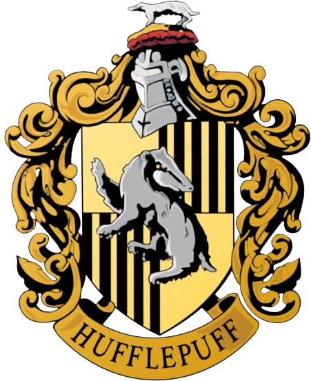

Lufa-Lufa, fundada por Helga Hufflepuff, é uma das quatro casas da Escola de Magia e Bruxaria de Hogwarts, sendo conhecida como a mais inclusiva entre as outras três. Seu animal emblemático é um texugo e suas cores são o amarelo e o preto. Principais características: Lealdade, Honestidade, Dedicação, Receptividade e Amáveis.
 Voltar para o Chapéu Seletor